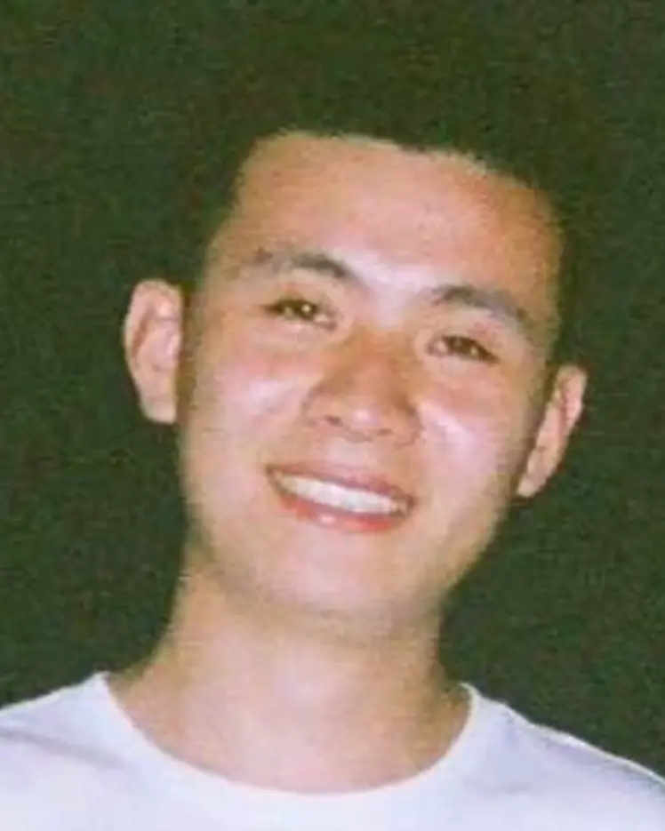

Hangzhan Jin
Montréal, Canada
I’m a third-year PhD student at Polytechnique Montréal and Mila, advised by Doina Precup and Mohammad Hamdaqa.
I work on large language model (LLM) post-training and continual learning, focusing on reasoning, exploration, and forgetting.
I’m seeking research internships in LLM post-training for winter or summer 2027.

Research
I study forgetting during supervised fine-tuning and when reinforcement learning can recover lost out-of-distribution reasoning performance. I develop fine-tuning methods to reduce forgetting and policy optimization methods to encourage exploration and generalization during reinforcement learning.
My current work also explores recursive self-improvement (RSI): how agents can contribute to improving their own capabilities over repeated learning cycles.
Selected publications
-
Exploration-Preserving Policy Optimization
ExPPO reshapes response-level advantages to encourage exploration during reinforcement learning.
-
Rotation-Preserving Supervised Fine-Tuning
RPSFT limits rotations in pretrained singular-vector subspaces to better preserve generalization beyond the fine-tuning tasks.
-
RL Fine-Tuning Heals OOD Forgetting in SFT
We show that RL can recover out-of-distribution reasoning performance lost during SFT, with recovery depending on the SFT checkpoint.
-
CCCI: Code Completion with Contextual Information for Complex Data Transfer Tasks Using Large Language Models
CCCI uses database relationships, object models, and library information to improve LLM code completion for data-transfer tasks.
Academic service
Reviewer: ICML 2026, NeurIPS 2026, and AAAI 2026.
Industry experience
Before my PhD, I held engineering and technical leadership roles, building distributed systems and large-scale data platforms.
- YQN Logistics
- I led the technical architecture team and the development of backend infrastructure and a low-code platform used by a 130-person engineering team.
- Yunqi Engineering Academy
- I designed and implemented core services for City Brain, an urban management platform that served more than 10 million users.
- Hejin Online
- I built a data warehouse for petabyte-scale processing and helped develop the company’s data platform.
Outside work
I love music and taking road trips around the world.
I play badminton regularly. I also enjoy pool, table tennis, and skating. When I get the chance, I like to snowboard, surf, and dive. I’ve been skydiving, too.